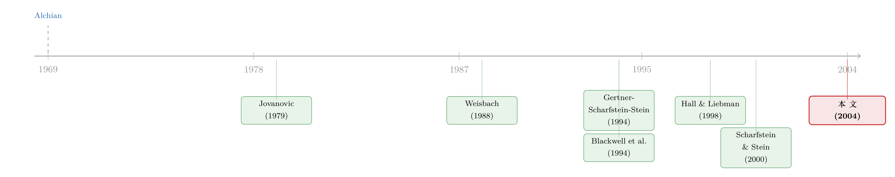

炒一个分公司经理，比炒一个 CEO 容易在哪？
本文读的是 McNeil, Niehaus & Powers (2004, JFE)：把企业集团里的「分公司经理」和规模、行业、年份都匹配好的「独立公司 CEO」放在一起比，作者发现——业绩一旦变差，分公司经理被换掉的概率明显更高，对业绩的敏感度也明显更强。换句话说，被人诟病为「乱花钱」的多元化集团，在「炒人」这件事上，反而比独立公司的董事会更狠、更准。
1 一个 1969 年没答完的问题
1969 年，产权经济学的开山人物之一 Armen Alchian 抛出过一个看似随口、其实极难回答的猜想：如果一个部门干得不好，那么把这个部门的头儿换掉，在一家企业集团（conglomerate）内部会比在一家独立公司里「更快」。理由是，总部的高管是「专家」，他们「因为收集和评估关于人的信息而获得更充分的回报」。
听上去很有道理。可 Alchian 自己在这段讨论的末尾，老老实实加了一句：「But what the truth is, I do not know.」——但真相到底如何，我并不知道。
三十多年过去，关于「董事会怎样监督 CEO」「接管市场怎样惩戒 CEO」的研究汗牛充栋，可对 Alchian 这个具体问题，我们手里几乎还是没有干净的证据。唯一的直接线索，来自 Blackwell, Brickley & Weisbach (1994) 在一篇研究德州银行的论文里、藏在一个脚注中的观察：德州的子银行高管，更替率确实比独立银行的 CEO 更高——可是，更替对业绩的敏感度在两组之间并没有差别。
于是问题就悬在这儿：分公司经理被换得更勤，到底是因为总部「管得更严」，还是仅仅因为换一个分公司经理本来就更便宜、更随意？McNeil、Niehaus 和 Powers 这篇 2004 年的 JFE，正是要把这个悬了三十多年的问题，用一套匹配样本认认真真地回答一遍。
2 先把「炒人」写成一道算术题
要回答 Alchian，作者没有一上来就跑回归，而是先从劳动经济学借来一个极简的更替模型（沿用 Jovanovic, 1979 的工作匹配思路）。这一步很关键：它把「为什么有人被炒、有人留任」化成了一个可以逐项比较的不等式，从而让我们能清楚地看到——分公司和独立公司，到底在哪几个参数上不一样。
设定。 经理被雇来时，谁也不知道他的真实能力 \(\theta\)。所有人只知道 \(\theta\) 服从一个正态分布，均值 \(\mu\)、标准差 \(\sigma_\theta\)。为简化，假设 \(\theta\) 直接以货币计量。经理干完第一期，产生一个可观测的业绩指标
$$y = \theta + \varepsilon, \qquad \varepsilon \sim N(0,\ \sigma_\varepsilon^2).$$
这里 \(\varepsilon\) 是与能力无关的随机噪声。直觉上，\(\sigma_\varepsilon\) 越大，业绩 \(y\) 就越「不能说明问题」——能力的信号被噪声淹没了。
更新信念。 看到 \(y\) 之后，委托人（principal）用贝叶斯法则修正对能力的预期。结果是先验 \(\mu\) 与观测值 \(y\) 的一个加权平均，权重恰好是各自方差的倒数，即「精度（precision）」：
$$E(\theta \mid y) = \frac{y\,\sigma_\varepsilon^{-2} + \mu\,\sigma_\theta^{-2}}{\sigma_\varepsilon^{-2} + \sigma_\theta^{-2}}. \tag{1}$$
这条式子的妙处在于：业绩越精确（\(\sigma_\varepsilon\) 越小，\(\sigma_\varepsilon^{-2}\) 越大），\(y\) 在加权平均里占的份量就越重；反之，噪声很大时，委托人就更愿意「将信将疑」，更多地依赖先验。
该不该换人？ 更新完信念，委托人面对一个选择：留住现任，还是从经理人才池里重新抽一个新人。换人要付两种成本——一种是公司层面的替换成本 \(C\)（找人、招聘、遣散等，由全体股东分担）；另一种是委托人私人承担、不与其他股东分摊的成本 \(C_P\)。正是这个 \(C_P\)，让委托人的换人决策可能偏离对股东最优的决策。
假设委托人风险中性、不贴现，其财富与业绩成正比、比例系数为 \(\alpha\)。那么：留任现任的期望回报是 \(\alpha E(\theta|y)\)；换人的期望回报是 \(\alpha(\mu - C) - C_P\)。委托人当且仅当后者更大时才换人。把 (1) 代进去，整理后得到更替条件：
这道不等式告诉我们四件事，每一件都直接对应着后面要比较的一个维度：
- 第一，\(y^*\) 一定小于一个新人期望产出 \(\mu\)。因为换人有成本，委托人愿意容忍一个「低于平均」的现任。
- 第二，替换成本 \(C\)、\(C_P\) 越大，门槛 \(y^*\) 越低，标准越宽松——成本高，就更舍不得动手。
- 第三，委托人的激励与股东越一致（\(\alpha\) 越大），私人成本 \(C_P\) 的分量就越轻，门槛 \(y^*\) 越高、标准越严。
- 第四，业绩噪声 \(\sigma_\varepsilon\) 越大，\(y^*\) 越低。信息越不准，委托人越愿意给经理「留有余地」。
到这里，比较的框架就清楚了：谁的 \(y^*\) 更高，谁就会在业绩变差时更容易被换掉，而且——只要业绩还没差到「两边都几乎必换」的极端——谁的更替对业绩也更敏感。
3 为什么分公司经理的门槛 \(y^*\) 更高？
接着，一个自然的问题是：在 \(C\)、\(C_P\)、\(\alpha\)、\(\sigma_\varepsilon\) 这四个参数上，分公司（委托人是总部高管）和独立公司（委托人是董事会）到底差在哪？作者一项一项地论证，结论是四个方向全都把分公司的 \(y^*\) 推得更高：
替换成本 \(C\) 更低。 当 CEO 的技能集和当分公司经理不同——Wruck & Wruck (2002) 指出，上市公司的顶层管理者需要分公司经理不需要的「公司治理」技能。所以合格的 CEO 替换人选池更小、更难找；加上独立公司 CEO 往往配着金降落伞（golden parachute）式的遣散方案，而分公司经理较少卷入控制权事务、遣散包通常更薄。两头加起来，换 CEO 比换分公司经理贵。
私人成本 \(C_P\) 更低。 董事更可能与 CEO 有私人或商业往来（Hallock, 1997 提供了董事会里「裙带」的证据），内部董事甚至会因为 CEO 被换而丢掉自己的席位（Fee & Hadlock, 2002）。更要命的是，罢免一个 CEO 需要董事会里凑够「临界多数」，而 CEO 本人和他亲手挑的几位董事往往就在董事会里——一场「政变」失败了还可能遭到报复。相比之下，总部高管要撤换一个分公司经理，通常拥有完整的权限，几乎不必担心自己的位置。
财富敏感度 \(\alpha\) 更高。 这是作者拿出最硬数字的一处对比：Hall & Liebman (1998) 估计，CEO 一年激励薪酬对股东价值的中位敏感度是每 1,000 美元股东价值对应 $5.29；而 Perry (1999) 估计，外部董事一年激励薪酬的合并财富敏感度中位数只有每 1,000 美元 $0.24。前者是后者的二十多倍。总部高管的薪酬与公司价值绑得更紧，意味着他们更接近「为股东着想」的那一端。
信息更准（\(\sigma_\varepsilon\) 更小）。 总部高管浸在日常经营里，对扰动业绩的随机因素了解更多、解读更在行（这正是 Alchian, 1969 和 Williamson, 1981 的论点）。作者甚至给了一个干净的建模方式：把噪声拆成两个独立项 \(\varepsilon = \varepsilon_1 + \varepsilon_2\)，假设总部能滤掉 \(\varepsilon_2\)、董事会不能。于是总部面对的是精度更高的「过滤后业绩」，门槛自然更严。
四箭齐发，模型的预测毫不含糊：业绩变差时，分公司经理被更替的概率，以及更替对业绩的敏感度，都应当高于独立公司的 CEO。 这恰恰是 Alchian 猜想的精确版本。
这里有一个容易被忽略、却很漂亮的细节：把「总部能滤掉一部分噪声」这件事写进模型后，作者诚实地指出，过滤前后业绩之差会给「更替—（未过滤）业绩」关系额外添加噪声，从而削弱而非夸大你能在数据里看到的信息优势。也就是说，模型自带一个对自己不利的偏差——这让后面真做出显著结果时，说服力更强。
4 识别：把「组织形式」单独拎出来
理论说得再好，实证上最大的难处是：分公司和独立公司，本来就是两类不同的企业。要把「组织形式」这一个变量单独拎出来，就得让其他维度尽量可比。
作者的做法是配对（matching）。他们先构造一个分公司经理样本，再按日历时间、规模、行业（SIC 代码），给每个分公司配上一个独立公司 CEO 作对照。匹配的用意很直白：让被比较的两个经营实体在资产结构上相似，只在组织结构上不同。由于手工收集数据量极大，样本只取 1987 年之后的公司（这样更可能从 Lexis–Nexis 等电子来源拿到信息）。
关键的一招在业绩指标上。以往比较「CEO」与「下属高管」的文献（除 Blackwell et al., 1994 外），比的是经营职责不同的人，又用公司层面的业绩——这种指标对 CEO 质量和对下属质量的信息含量天然不对等。本文则借助 Compustat 分部数据（segment data），构造一个分公司层面的经营业绩指标，使它对「分公司经理质量」的信息含量，大体能与公司层面业绩对「CEO 质量」的信息含量相称。这正回应了模型里那条警示：比较不同监督机制时，必须用对各类经理质量「同等信息量」的业绩尺子，否则你测到的「敏感度差异」可能只是「信息量差异」的赝品。
回归里，作者用 logit 估计「当年及随后两年内是否发生更替」，并控制了经理年龄、所有权结构、董事会结构、行业、股价表现和实体规模。标准误的处理、交互项的解读（论文专门提到 Powers, 2002 和 Jaccard, 2001 关于「logit 里交互项不能直接按系数读」的方法论），都做得相当谨慎。
5 主要结果：集团其实「下得去手」
把所有控制变量都固定在样本中位数，只让经营业绩从中位数降到 25 百分位，看预测的更替概率怎么变。
分公司经理 vs 独立公司 CEO。 业绩这样一降，分公司经理在「当年及随后两年内」被更替的预测概率从 0.34 升到 0.51；而独立公司 CEO 只从 0.30 升到 0.35。前者陡得多——0.17 个百分点对 0.05 个百分点。无论是「业绩差时的更替概率」，还是「更替对业绩的敏感度」，分公司经理都显著更高。Alchian 猜了一半的那句话，终于落了地。
再往里看一层：相关 vs 不相关。 这是本文第二个、也更有意思的结果。Gertner, Scharfstein & Stein (1994) 有一个关于内部资本市场的模型，预测「相关型集团里的业务单元经理，在业绩不佳后更可能被替换」——因为相关行业之间重新部署资产的成本更低，资产「挪得动」，人也就更「换得起」。本文正好能检验它：把业绩同样从中位数降到 25 百分位，与母公司处于同一行业的分公司，更替概率从 0.27 飙到 0.57；而处于不相关行业的分公司，只从 0.27 升到 0.39。差距巨大，且方向与 Gertner et al. 的预测完全一致。
合在一起，这篇论文讲了一个有点反直觉的故事：多元化集团在资本配置上常被批评「乱投资、内部寻租」（这条线可参见《拆分真能让公司投得更聪明吗？》与《拆掉一家公司，是为了让老板「坐不住」》），可一旦把镜头对准「监督和惩戒经理」这一面，集团反而拥有比独立公司董事会更严格的纪律机制。换句话说，独立结构在别处的种种好处，可能被它在「管人」上的相对松懈部分抵消掉了。
6 文献脉络
把这篇论文放回它生长的那条藤上，会看得更清楚。
最远的源头有两支。一支是产权与组织理论：Alchian (1969) 提出猜想，Williamson (1981) 论证总部的信息与协调优势，二者共同构成「集团内部劳动力市场该更有效」的先验。另一支是劳动经济学的工作匹配理论：Jovanovic (1979)、以及 McKenna (1986)、Murphy (1986)，把「更替=对坏业绩的贝叶斯反应」写成可分析的模型——这正是本文模型的骨架。

中间是两条平行推进的实证文献。其一是「董事会与接管市场如何惩戒 CEO」：Weisbach (1988) 看外部董事对 CEO 更替的影响，往后是 Denis, Denis & Sarin (1997)、Mikkelson & Partch (1997) 等一长串（关于董事在炒 CEO 时的角色与声誉，可参见《炒掉 CEO，董事是英雄还是「帮凶」？》）。其二是「替代性监督机制下的高管更替」：Blackwell et al. (1994) 的德州银行、Mian (2001) 的 CFO、Fee & Hadlock (2002) 的 CEO 下属高管——这些文献都发现下属高管整体更替率更高，却都没发现敏感度更高。
本文恰好卡在两条线的交汇处，并用一个关键改进打破了僵局：以往比的是「职责不同 + 公司层面业绩」，本文比的是「职责相似 + 分部层面业绩」。正因为换了这把信息量对等的尺子，它第一次干净地测出了「敏感度也更高」。而把 Gertner et al. (1994) 的相关性预测一并验证，又让它与内部资本市场的「黑暗面」文献（Scharfstein & Stein, 2000）接上了头——只不过给出的是「集团也有光明面」的一侧证据。顺带一提，本文作者之一 Powers，正是 Gertner, Powers & Scharfstein (2002) 研究公司分拆与内部资本市场的合作者，这条学术血缘并不意外。
7 评论与延伸（Q&A + 研究方向）
(a) 几个可能的疑问
Q：分公司经理更替率高，难道不只是因为「换分公司经理本来就便宜随意」吗？这跟「监督更严」是两回事。
这正是本文最想撇清的混淆。模型把「便宜」（替换成本 \(C\)、\(C_P\) 低）和「敏感」（财富敏感度 \(\alpha\) 高、信息 \(\sigma_\varepsilon\) 准）拆成不同参数：成本低只会抬高整体更替水平，而真正决定「业绩一差就动手」这种敏感度的，是 \(\alpha\) 与信息精度。Blackwell et al. (1994) 恰恰只看到水平更高、敏感度不变；本文用信息量对等的分部业绩，才同时看到了水平和敏感度都更高——这才是「监督更严」而非「换人更随意」的证据。
Q：用 Compustat 分部业绩当分公司经理的「成绩单」，可信吗？分部数据本身就有口径问题。
这是识别的命门，作者也承认。分部报告存在自由裁量和口径不一，但本文的论证不依赖分部业绩绝对准确，只依赖它对分公司经理质量的信息含量，大体可比于公司业绩对 CEO 的信息含量。而且模型里那个「过滤噪声」的设定表明，测量误差会削弱而非制造出敏感度差异——所以这是一个对结论不利的偏差，做出显著结果反而更难能可贵。
Q：会不会是「业绩差的分公司被整体卖掉/关掉」，经理跟着走人，被误记成「更替」？
这是分公司样本特有的内生退出问题。理想情况下应区分「经理被换、分公司还在」与「分公司被处置、经理被迫离开」。论文用「当年及随后两年内更替」的窗口，并控制了行业、规模等，但这类组织层面的退出仍是潜在噪声来源——也是后续工作值得用更细的离职原因数据去厘清的地方。
Q：相关型集团更替敏感度更高，到底是 Gertner et al. 说的「资产挪得动」，还是仅仅因为总部对相关行业「看得更懂」（信息更准）？
两种机制在本文框架里都会抬高门槛 \(y^*\)：资产可重新部署降低了替换成本，行业相关提高了总部的信息精度。本文的数据能证实「相关性确实强化了更替—业绩关系」，但难以把这两条机制彻底分开。这是结果稳健、机制存疑的典型情形。
Q：这和 Anderson et al. (2000)、Berry et al. (2000) 比较「集团 CEO 与单一业务公司 CEO 更替」的研究，有什么不同？
看似相近，问的其实是两回事。那两篇比的是组织结构相似、但经营职责不同的人（都是 CEO，只是公司多元化程度不同）；本文比的是经营职责相似、但组织结构不同的人（分公司经理 vs 独立公司 CEO）。后者才是 Alchian 猜想的正确对照组。
Q：既然集团「管人」更严，那为什么市场总体上还认为多元化「折价」？
本文没有否认多元化折价，而是指出：独立结构在资本配置、估值透明、激励等方面的优势（Berger & Ofek, 1995 等），可能被它在「惩戒经理」上的相对松懈部分抵消。这是一篇「给集团说句公道话」的论文，不是给多元化翻案——它补上的是成本—收益账本里一直缺的一页。
(b) 几个可能的研究问题与提案
1）把镜头转向「外资控股的子公司」。 【经济故事】本文的核心是「委托人的信息精度与财富敏感度决定了惩戒强度」。那么当委托人是一家外国母公司时，地理与制度距离会拉低信息精度 \(\sigma_\varepsilon^{-2}\)、削弱总部「滤噪」的能力——按模型，外资子公司经理的更替—业绩敏感度应当低于本土集团的子公司。这正好嫁接到外资是否真有「信息劣势」的争论（可参见《外资真有「信息劣势」吗？》）。 【可行性】中。需要跨国母子公司的高管更替数据（如 Orbis + 各国披露），识别上可用「母子公司行业相关性 × 地理距离」做异质性，但外资子公司本身的选择性是硬骨头。
2）把「分部业绩—经理更替」搬到信用市场，看债权人怎么反应。 【经济故事】如果集团对子公司经理的惩戒确实更严、更准，那么持有该集团债券的债权人，是否会因此要求更低的信用利差（更强的内部纪律 = 更低的代理风险）？反过来，宣布更替分公司经理，是否带来母公司债券利差的变化？ 【可行性】中。需要把分公司经理更替事件与母公司发行的公司债二级市场利差对齐（TRACE + 手工收集更替公告），用事件研究法。难点是更替事件的可观测性与公告日的精确定位。
3）用一次外生的「集团拆分」做前后对照。 【经济故事】同一批经理，在「身处集团（委托人是总部）」与「拆分后独立（委托人是新董事会）」两种状态下，更替—业绩敏感度是否真的下降？这能把「组织形式」从配对的横截面比较，升级成准面板的前后比较，直击模型的因果含义。 【可行性】中偏低。可用 spin-off / equity carve-out 样本（Gertner, Powers & Scharfstein, 2002 的思路），追踪拆分前后同一业务单元高管的更替行为。样本量和「谁被拆分」的内生性是主要障碍。
4）把「财富敏感度 \(\alpha\)」做成可测变量，直接检验模型机制。 【经济故事】模型预测：委托人薪酬对公司价值越敏感（\(\alpha\) 越大），惩戒越严。如果能同时观测「总部高管对子公司业绩的薪酬敏感度」与「该子公司经理的更替敏感度」，就能在集团内部做一次对机制的直接检验，而不只是停在「组织形式」这个粗糙代理上。 【可行性】中。需要集团内部高管薪酬结构数据（ExecuComp 主要覆盖顶层，分部高管薪酬难得），可在有详细分部披露的行业或国家里试点。
(c) 我的判断
这篇论文的贡献，在我看来不在于「跑出了一个显著系数」，而在于它把比较做对了。三十多年里大家都在比「更替率」，却始终在「职责不同、信息量不对等」的泥潭里打转；它换上分部业绩这把对等的尺子、再配上规模—行业—时间的匹配样本，第一次让「敏感度也更高」这个结论站得住脚。模型那一节也写得克制而漂亮——尤其是主动指出测量误差会反向削弱自己的结果，这种诚实在实证论文里并不多见。
对识别，我仍有两点不踏实。其一是分部业绩的内生与口径：分部利润既受经理影响，也受集团转移定价、内部交易、资产腾挪的影响，而后者恰恰是相关型集团更普遍——这意味着「相关性 × 敏感度」那个最漂亮的结果，可能有一部分是「相关集团更会做账/挪资产」带来的，而非纯粹的「惩戒更严」。其二是组织层面的退出：业绩差的分公司被卖被关、经理随之离开，与「经理因业绩被撤换」在数据里很难分清，二者会同向夸大分公司一侧的敏感度。
后续我最想看到的，是把这套框架放进信用市场和外资持有人的语境里：如果「集团内部纪律更严」是真的，它理应在债券利差、在外资子公司的更替行为上留下可观测的印记。那将不只是给 Alchian 的老问题补一个注脚，而是把「组织形式如何定价代理风险」这件事，真正接到今天的市场数据上。
参考文献
- Alchian, A. (1969). Corporate management and property rights. In H. Manne (Ed.), Economic Policy and the Regulation of Corporate Securities. American Enterprise Institute, pp. 337–360.
- Anderson, R., Bates, T., Bizjak, J., & Lemmon, M. (2000). Corporate governance and firm diversification. Financial Management 29, 5–22.
- Berger, P., & Ofek, E. (1995). Diversification's effect on firm value. Journal of Financial Economics 37, 39–65.
- Blackwell, D., Brickley, J., & Weisbach, M. (1994). Accounting information and internal performance evaluation: Evidence from Texas banks. Journal of Accounting and Economics 17, 331–358.
- Fee, E., & Hadlock, C. (2002). Management turnover across the corporate hierarchy. Unpublished working paper, Michigan State University.
- Gertner, R., Scharfstein, D., & Stein, J. (1994). Internal versus external capital markets. Quarterly Journal of Economics 109, 1211–1230.
- Gertner, R., Powers, E., & Scharfstein, D. (2002). Learning about internal capital markets from corporate spinoffs. Journal of Finance 57, 2479–2506.
- Hall, B., & Liebman, J. (1998). Are CEOs really paid like bureaucrats? Quarterly Journal of Economics 113, 653–691.
- Hallock, K. (1997). Reciprocally interlocking boards of directors and executive compensation. Journal of Financial and Quantitative Analysis 32, 331–344.
- Jovanovic, B. (1979). Job matching and the theory of turnover. Journal of Political Economy 87, 972–990.
- McNeil, C., Niehaus, G., & Powers, E. (2004). Management turnover in subsidiaries of conglomerates versus stand-alone firms. Journal of Financial Economics 72(1), 63–96.
- Mian, S. (2001). On the choice and replacement of chief financial officers. Journal of Financial Economics 60, 143–175.
- Murphy, K. (1986). Incentives, learning, and compensation. Rand Journal of Economics 17, 59–76.
- Perry, T. (1999). Incentive compensation for outside directors and CEO turnover. Unpublished working paper, Arizona State University.
- Scharfstein, D., & Stein, J. (2000). The dark side of internal capital markets: Divisional rent-seeking and inefficient investment. Journal of Finance 55(6), 2537–2564.
- Weisbach, M. (1988). Outside directors and CEO turnover. Journal of Financial Economics 20, 431–460.
- Williamson, O. (1981). The modern corporation: Origins, evolution, attributes. Journal of Economic Literature 19, 1537–1568.
- Wruck, K., & Wruck, E. (2002). Restructuring top management: Evidence from corporate spinoffs. Journal of Labor Economics 20, S176–S218.